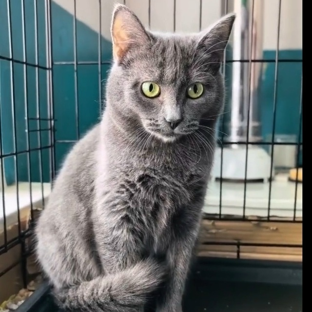
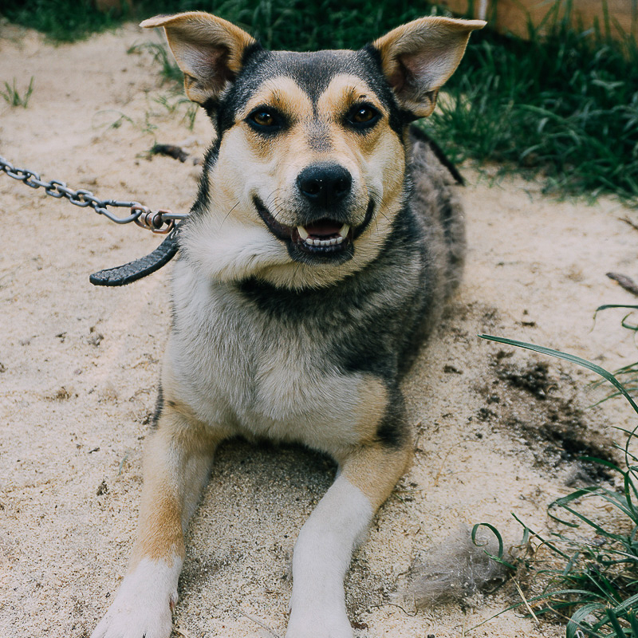
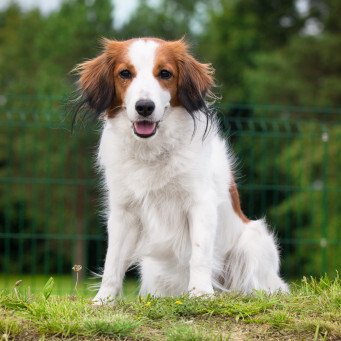

Хвостатый рай

3 года
Характер: Очень умный и наблюдательный. Быстро понимает настроение человека и старается не навязываться.

2 года
Характер: Спокойная, ласковая и осторожная. Сначала держится на расстоянии, но когда привыкает — становится очень нежной и привязывается к человеку.

5 лет
Характер: Очень умный, быстро учится командам и отлично понимает человека. Добрый, спокойный и невероятно ласковый. Любит внимание, но не навязывается.

4 года
Характер: Умный, спокойный и немного гордый. Любит наблюдать за происходящим со стороны и не спешит сразу доверять новым людям. Но если привыкает — становится очень верным и ласковым.

3 года
Характер: Самостоятельный и уравновешенный. Не любит суеты и резких движений. Предпочитает сначала понаблюдать, а уже потом идти на контакт. Уверенный в себе и немного хитрый.

5 лет
Характер: Осторожный и выносливый пёс. Не сразу доверяет, но отлично чувствует обстановку. Спокойный, но в нужный момент становится очень собранным и внимательным.

2 года
Характер: Спокойная и немного настороженная собака. Аккуратная, тихая, любит порядок и не любит излишнюю активность вокруг.